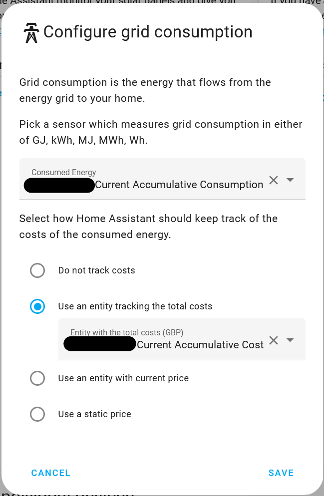
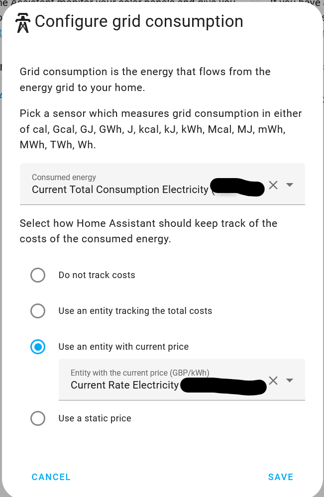
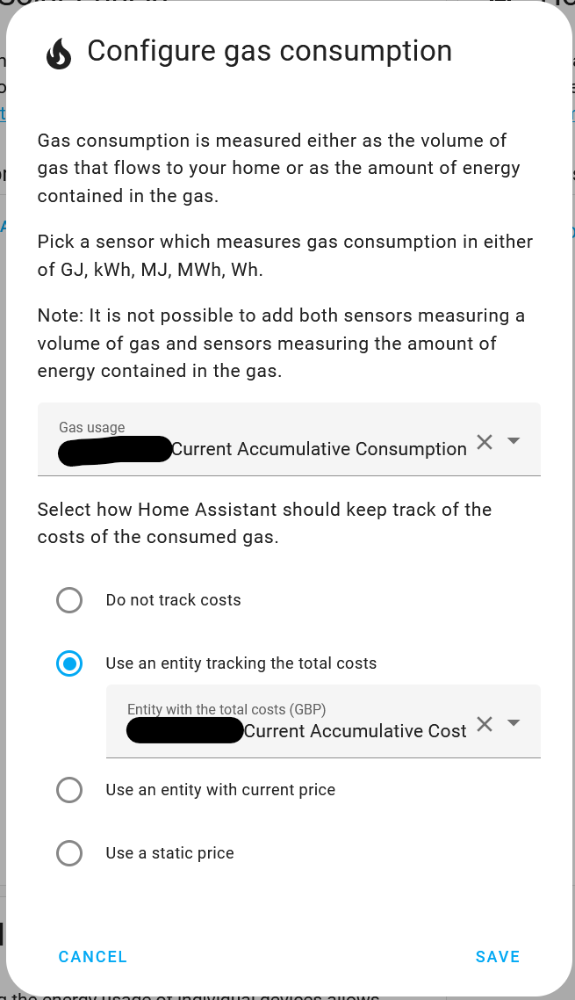
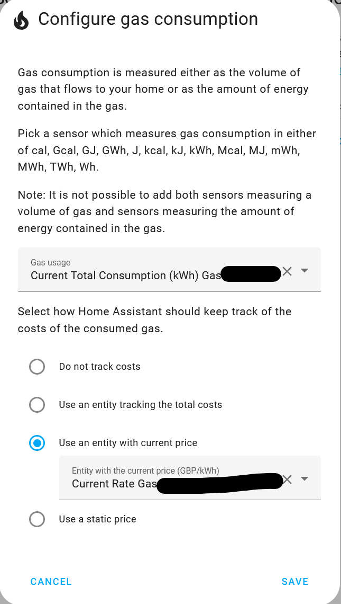
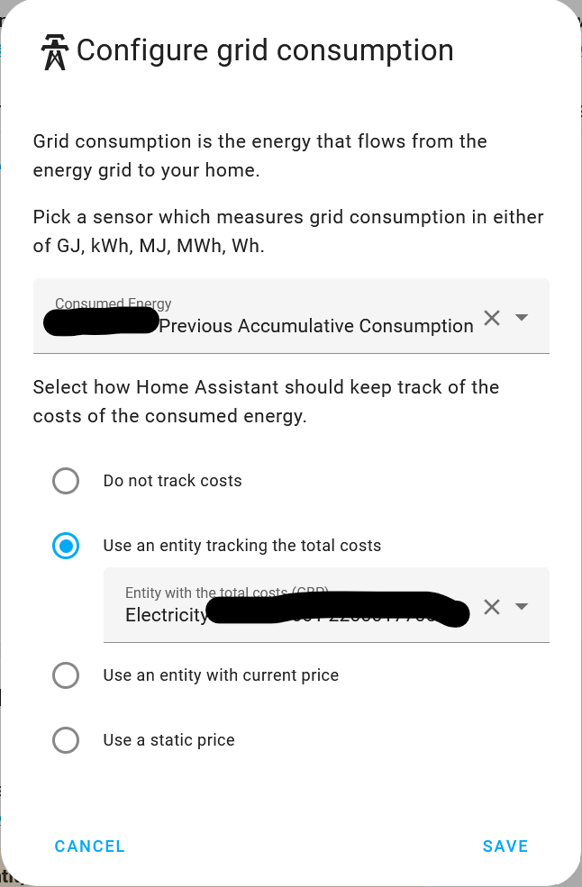
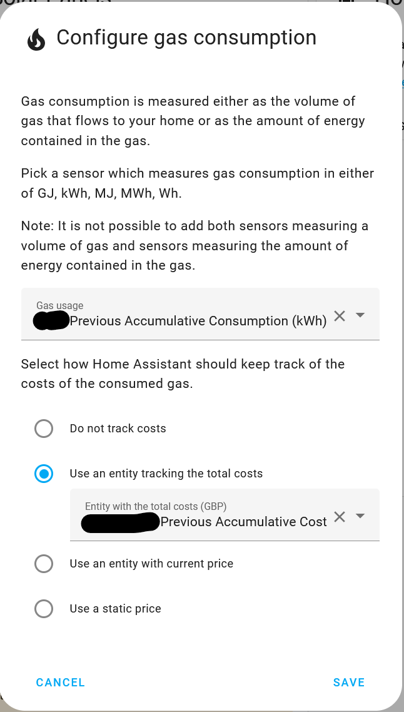

Energy Dashboard#
Current Consumption#
For Electricity#
You can only record current (i.e. today's) consumption in the Energy dashboard if you have a way of measuring live consumption in your home.
Octopus Home Mini#
If you have an Octopus Home Mini and a smart electricity meter you can obtain live meter reading data into Home Assistant:
- Go to your energy dashboard configuration
- Click
Add ConsumptionunderElectricity grid - For
Consumed energyyou wantsensor.octopus_energy_electricity_{{METER_SERIAL_NUMBER}}_{{MPAN_NUMBER}}_current_accumulative_consumption - Choose the
Use an entity tracking the total costsoption and the entity issensor.octopus_energy_electricity_{{METER_SERIAL_NUMBER}}_{{MPAN_NUMBER}}_current_accumulative_cost

Note
Data will only appear in the energy dashboard from the point you configure the Home Mini within the integration. It doesn't backport any data.
Octopus Home Pro#
If you have an Octopus Home Pro and a smart electricity meter you can obtain live meter reading data into Home Assistant:
- Go to your energy dashboard configuration
- Click
Add ConsumptionunderElectricity grid - For
Consumed energyyou wantsensor.octopus_energy_electricity_{{METER_SERIAL_NUMBER}}_{{MPAN_NUMBER}}_current_total_consumption - Choose the
Use an entity with current priceoption and the entity issensor.octopus_energy_electricity_{{METER_SERIAL_NUMBER}}_{{MPAN_NUMBER}}_current_rate

Note
Data will only appear in the energy dashboard from the point you configure the Home Pro within the integration. It doesn't backport any data.
Alternative methods to measure current Home Consumption#
If you don't have an Octopus Home mini you may have another way to get live or near-live daily consumption into Home Assistant such as a Hildebrand Glow In Home Display, an Energy CT Clamp such as the Shelly EM on the incoming supply cable, or your existing Solar/Battery inverter may have a sensor that provides Grid import information that you can use in the Energy dashboard.
Do be aware that as you are not directly capturing the smart meter readings in Home Assistant the consumption does not include the standing charge and there will always be a small measurement difference from what Octopus energy say you have used, but in practice the difference is likely to be quite small.
- Create a utility meter that resets daily to store the consumption sensor information in, e.g. called
Grid Import Today - The utility meter should point to the sensor that is measuring your grid import. e.g. for a Hildebrand Glow it could be
sensor.smart_meter_electricity_energy_import; a Shelly EM will besensor.<EM channel name>_energy_total; for a GivEnergy inverter using the GivTCP integration it will besensor.givtcp_XXyywwXnnn_import_energy_today_kwh - Then add the consumption information to the Energy dashboard as per the steps for Octopus Home Mini above. For step 3,
consumed energy, you want the utility meter you have just created above, e.g.sensor.grid_import_todayand for step 4, chooseUse an entity with current priceand the entity issensor.octopus_energy_electricity_{{METER_SERIAL_NUMBER}}_{{MPAN_NUMBER}}_current_rate
For Gas#
Octopus Home Mini#
If you have an Octopus Home Mini and a smart electricity meter you can obtain live meter reading data into Home Assistant:
- Go to your energy dashboard configuration
- Click
Add Gas SourceunderGas consumption - For
Gas usageyou wantsensor.octopus_energy_gas_{{METER_SERIAL_NUMBER}}_{{MPRN_NUMBER}}_current_accumulative_consumption_kwh - For
Use an entity tracking the total costsoption you wantsensor.octopus_energy_gas_{{METER_SERIAL_NUMBER}}_{{MPRN_NUMBER}}_current_accumulative_cost

Note
Data will only appear in the energy dashboard from the point you configure the Home Mini within the integration. It doesn't backport any data.
Octopus Home Pro#
If you have an Octopus Home Pro and a smart gas meter you can obtain live meter reading data into Home Assistant:
- Go to your energy dashboard configuration
- Click
Add ConsumptionunderElectricity grid - For
Consumed energyyou wantsensor.octopus_energy_gas_{{METER_SERIAL_NUMBER}}_{{MPRN_NUMBER}}_current_total_consumption_kwh - Choose the
Use an entity with current priceoption and the entity issensor.octopus_energy_gas_{{METER_SERIAL_NUMBER}}_{{MPRN_NUMBER}}_current_rate

Note
Data will only appear in the energy dashboard from the point you configure the Home Pro within the integration. It doesn't backport any data.
Previous Day Consumption#
If none of the methods above for feeding Current Day Consumption information into the Energy dashboard are suitable, you can add previous consumption information to the dashboard, using information retrieved via the Octopus API. Note that the consumption information is only available on the following day so "today's" Energy dashboard will show zero values, but "yesterday's", "day before", etc will show the correct consumption for each day.
Warning
Beware: Whilst you can add the previous consumption sensors directly to the Energy dashboard, they will be associated with the wrong day. This is because the Energy dashboard uses the timestamp of when the sensor updates to determine which day the data should belong to.
Instead, you must use external statistics that are exported by the previous consumption sensors, which are broken down into hourly chunks.
Info
It can take up to 24 hours for the external statistics to appear.
Note
I'm still investigating having hourly breakdowns imported on the entity themselves rather than as external statistics, but currently in doing so it's still including the spikes on the day of retrieval. I've opened a forum post but awaiting answers.
For Electricity#

- Go to your energy dashboard configuration
- Click
Add ConsumptionunderElectricity Grid - For
consumed energyyou want one of the following: octopus_energy:electricity_{{METER_SERIAL_NUMBER}}_{{MPAN_NUMBER}}_previous_accumulative_consumption- The total consumption reported by the meter for the previous day. Please note the different name to the standard entity, do NOT choose sensor.electricity_{{METER}}_{{MPAN}}_previous_accumulative_consumption.octopus_energy:electricity_{{METER_SERIAL_NUMBER}}_{{MPAN_NUMBER}}_previous_accumulative_consumption_peak- The total consumption reported by the meter during peak hours for the previous day. This will only be populated if you're on a tariff with two available rates and is disabled by default. Please note the different name to the standard entity, do NOT choose sensor.electricity_{{METER}}_{{MPAN}}_previous_accumulative_consumption_peak.octopus_energy:electricity_{{METER_SERIAL_NUMBER}}_{{MPAN_NUMBER}}_previous_accumulative_consumption_off_peak- The total consumption reported by the meter during off-peak hours for the previous day. This will only be populated if you're on a tariff with two available rates and is disabled by default. Please note the different name to the standard entity, do NOT choose sensor.electricity_{{METER}}_{{MPAN}}_previous_accumulative_consumption_off_peak.- For
Use an entity tracking the total costsoption you want one of the following: octopus_energy:electricity_{{METER_SERIAL_NUMBER}}_{{MPAN_NUMBER}}_previous_accumulative_cost- The total cost for the previous day. Please note the different name to the standard entity, do NOT choose sensor.octopus_energy_electricity_{{METER_SERIAL_NUMBER}}_{{MPAN_NUMBER}}_previous_accumulative_cost.octopus_energy:electricity_{{METER_SERIAL_NUMBER}}_{{MPAN_NUMBER}}_previous_accumulative_cost_peak- The total cost for the previous day that applied during peak hours. This will only be populated if you're on a tariff with two available rates and is disabled by default. Please note the different name to the standard entity, do NOT choose sensor.octopus_energy_electricity_{{METER_SERIAL_NUMBER}}_{{MPAN_NUMBER}}_previous_accumulative_cost_peak.octopus_energy:electricity_{{METER_SERIAL_NUMBER}}_{{MPAN_NUMBER}}_previous_accumulative_cost_off_peak- The total cost for the previous day that applied during off-peak hours. This will only be populated if you're on a tariff with two available rates and is disabled by default. Please note the different name to the standard entity, do NOT choose sensor.octopus_energy_electricity_{{METER_SERIAL_NUMBER}}_{{MPAN_NUMBER}}_previous_accumulative_cost_off_peak.
For Gas#

- Go to your energy dashboard configuration
- Click
Add Gas SourceunderGas Consumption - For
consumed energyyou want one of the following octopus_energy:gas_{{METER_SERIAL_NUMBER}}_{{MPRN_NUMBER}}_previous_accumulative_consumption- The total consumption reported by the meter for the previous day in m3. If your meter reports in m3, then this will be an accurate value reported by Octopus, otherwise it will be a calculated/estimated value. Please note the different name to the standard entity, do NOT choose sensor.octopus_energy_gas_{{METER_SERIAL_NUMBER}}_{{MPRN_NUMBER}}_previous_accumulative_consumption.octopus_energy:gas_{{METER_SERIAL_NUMBER}}_{{MPRN_NUMBER}}_previous_accumulative_consumption_kwh- The total consumption reported by the meter for the previous day in kwh. If your meter reports in kwh, then this will be an accurate value reported by Octopus, otherwise it will be a calculated/estimated value. Please note the different name to the standard entity, do NOT choose sensor.octopus_energy_gas_{{METER_SERIAL_NUMBER}}_{{MPRN_NUMBER}}_previous_accumulative_consumption_kwh.- For
Use an entity tracking the total costsoption you want the following octopus_energy:gas_{{METER_SERIAL_NUMBER}}_{{MPRN_NUMBER}}_previous_accumulative_cost- The total cost for the previous day. Please note the different name to the standard entity, do NOT choose sensor.octopus_energy_gas_{{METER_SERIAL_NUMBER}}_{{MPRN_NUMBER}}_previous_accumulative_cost.